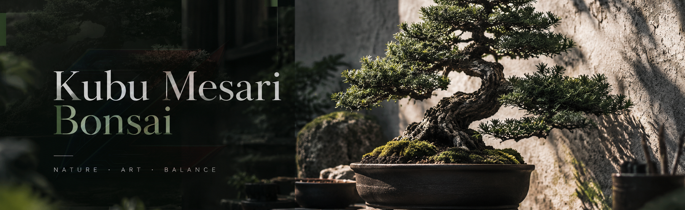
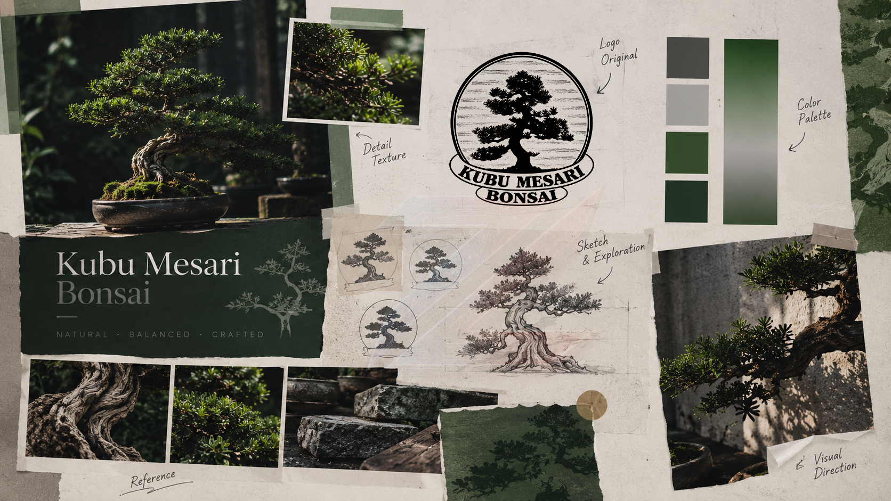
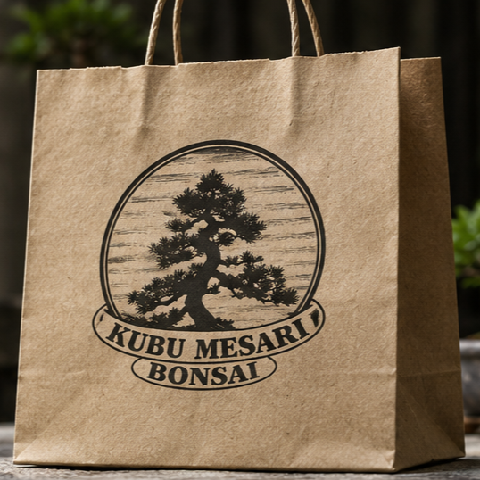
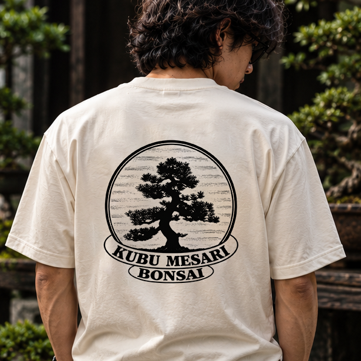
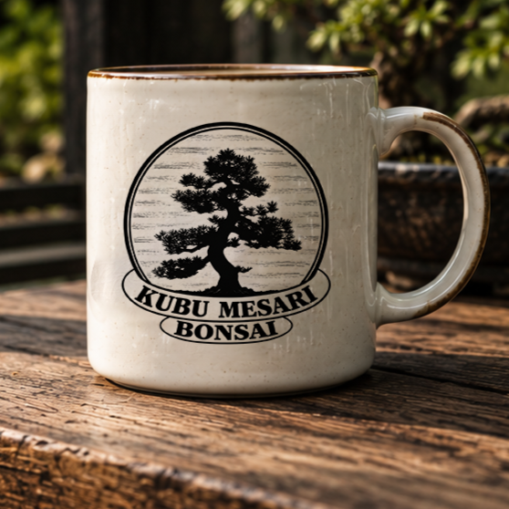
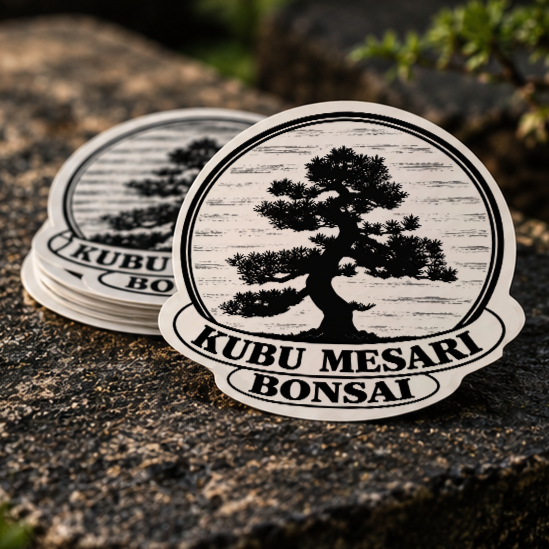
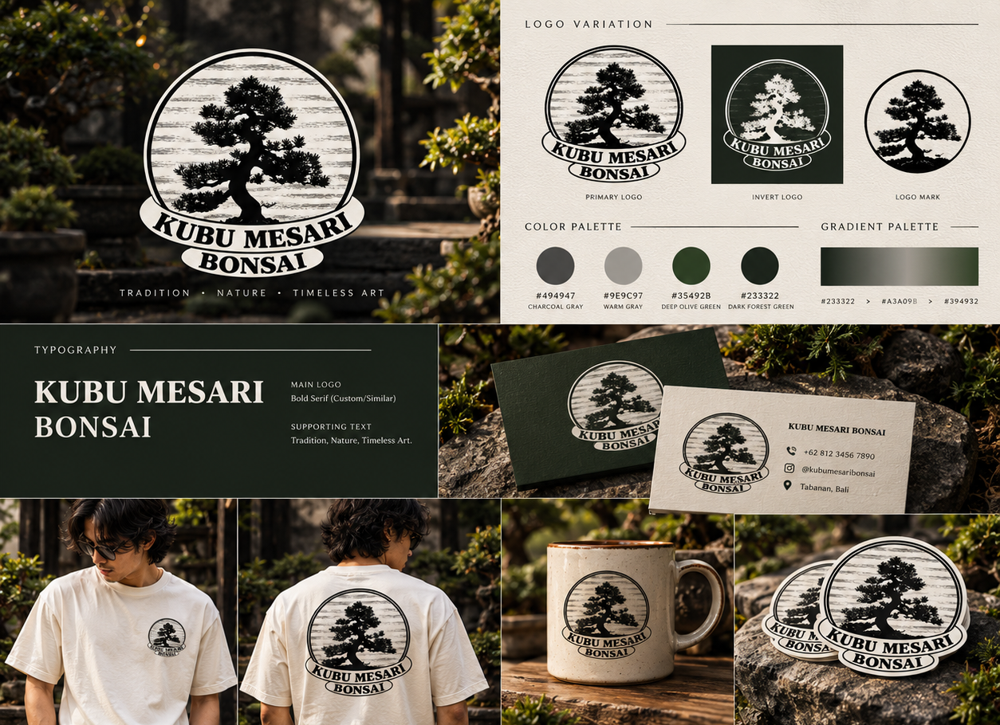

Kubu Mesari Bonsai
A branding project developed for Kubu Mesari Bonsai, focusing on creating a natural and distinctive visual identity inspired by bonsai and traditional craftsmanship.

Project Overview
This project focuses on developing a visual identity for Kubu Mesari Bonsai, a brand centered around bonsai and traditional botanical craftsmanship. The process includes logo development, color selection, and visual styling to create a recognizable and consistent identity.
The visual direction combines natural elements with a simple and refined aesthetic, reflecting the character of bonsai and the craftsmanship behind the brand.
Concept & Direction

Visual Direction
The visual direction draws inspiration from bonsai and the connection between nature, patience, and craftsmanship. Deep green and neutral tones create a calm and natural atmosphere that reflects the character of the brand.
Design Approach
The logo combines the bonsai as the main visual element with a simple emblem-style layout, creating an identity that feels traditional, balanced, and easy to recognize.
Typography
Bold serif typography used as the primary typeface for the main brand name, creating a traditional and distinctive character.
The same serif style is used for the secondary wordmark to maintain consistency with the main logo.
A clean and readable supporting type style is used for descriptions, information, and other brand communication.
Color Palette
Show the core colors used to build the visual identity. Replace the values below with the actual project palette.
Brand Application
Show how the identity is applied across different media and touchpoints.




Final Result
Final selected visuals from the completed branding project.
